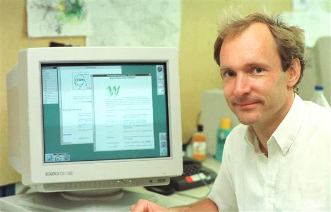

A Brief History of the Web
- from the 1960s, systems were connected together
- research institutions, government and military computers
January 1st, 1983 - Internet was born
- TCP/IP invented to form a common language between systems on the network
- Email, IRC chat, FTP file transfers
- but still no "web"
- In 1989, CERN scientist Tim Berners-Lee invents the World Wide Web
- December 1990, first browser and website go live
- HTML was invented to code text formating
- Inspired by print media of the time, includes images, fonts, styles etc
- Web Browsers read this code and renders the content to the screen
The Early Days of the Internet
- no longer the domain of institutions, but of the general public
- free and open space to create and discuss
- connected communities and individuals from around the globe
- the Dot Com bubble
- an Internet culture was born

Web 2.0
- shift in the webs ethos
- the social web
- new level of interaction and participation
The future: Web3
- decentralised web
- crypto-currency, tokens, NFTs etc
- the "metaverse"
Anatomy of the Web
What is a website?
- a bundle of cross referenced files
- HTML, CSS, Javascript, images, fonts etc
- together define a webpage
How are websites visited?
files stored on a computer on the network called a "server"
a website URL is converted to an IP address to locate this server
once connected, the browser ("client") makes a "request" for the files
the server "responds" to the client with the requested files
after recieving them over the connection, they are rendered by the browser on the screen
"Frontend"
- computer code that runs on the user side
- graphical, visuals, basic interactionsm
"Backend"
- computer code that runs on the server side
- web search, image upload, messaging etc
Web Technologies beyond the basics...
- Websockets
- SQL, PHP, jQuery, Ajax etc
- Node.js
- Web frameworks: React, Vue, Angular etc
- Progressive Web Apps
and many more...
we will only focus on the basics of the frontend of a website
Three core ingredients
- HTML: defines the content and layout of a webpage
- CSS: sets the styles of the elements in the page
- JavaScript: for interactive behaviour